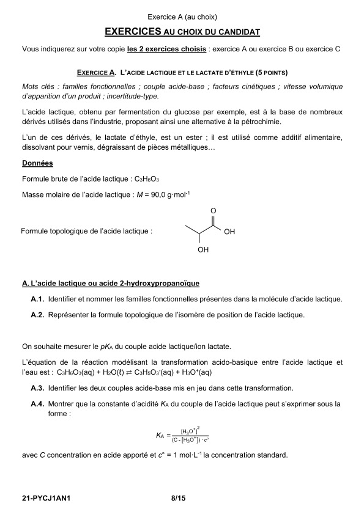
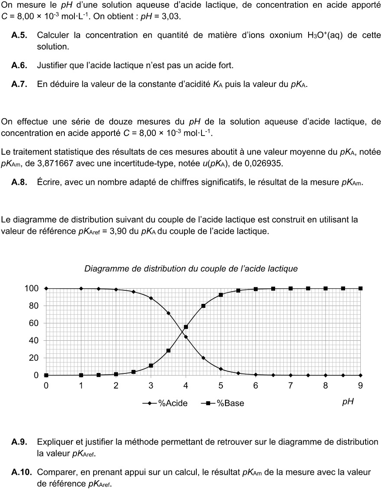
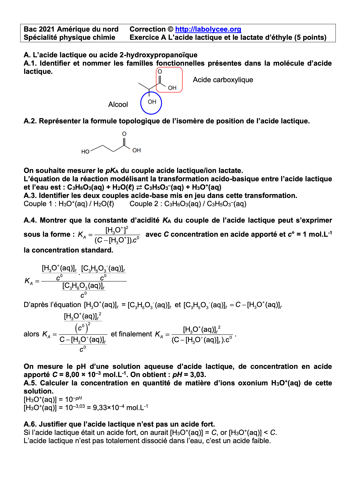
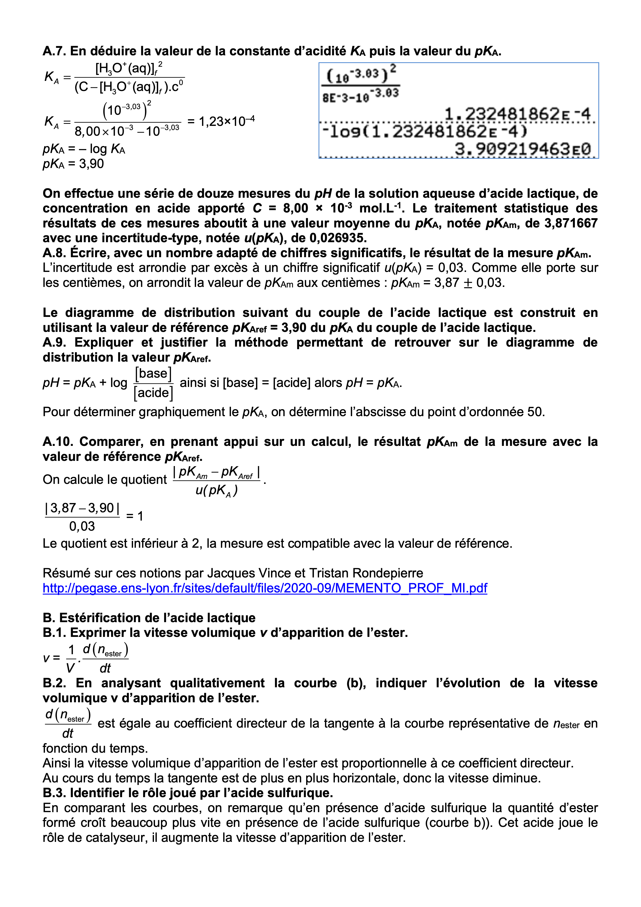

Force des acides et des bases
Définitions
- L'eau peut gagner ou perdre un ion \(H^+\) c'est donc une espèche amphothère
- Produit ionique (toujours valable):
- Ka constante d'acidité: constante d'équilibre de la réaction entre un acide AH et l'eau
- Relation pH et pKa
- Avoir en tête un exemple (nom et formule):
- d'acide fort et d'acide faible
- de base faible et de base forte
Techniques
- Savoir calculer le pH à partir de \([OH^-]\).
Stratégie
Utiliser Ke pour calculer \(H_3O^+\) puis la définition du pH
- Déterminer Ka à partir d'une mesure du pH et de la concentration C de la solution d'acide.
Stratégie
A l'équilibre \([A^-]=[H_3O^+]= 10^{-pH}\) et \([AH]=C-[A^-]\)
- Connaissant le pKa d'un couple, représenter son diagramme de prédominance.
- Donner l'espèce prédominante connaissant le pH et le pKa.
- Savoir lire un diagramme de distribution (cf cours)
Exercices incontournables
Exercice 1 (d'après Métropole juin 2021 sujet 2)
- Écrire l’équation de la réaction de l’acide méthacrylique, noté HA, dans l’eau.
- Donner la relation entre la constante d’acidité Ka du couple acide méthacrylique / ion méthacrylate noté HA / A– et les concentrations en quantité de matière à l’équilibre des espèces chimiques HA et A–.
-
Vérifier, par un raisonnement quantitatif, que la valeur du pH d’une solution aqueuse d’acide méthacrylique de concentration cm = 100 g·L–1 est de 2,3.
Aide
Faire un tableau d'avancement, exprimer les concentrations à l'équilibre en fonction de l'avancement à l'équilibre. Exprimer Ka en fonction de \(x_{eq}\)
Données: masse molaire moléculaire : M = 86,1 g·mol–1 ;- pKa, à 25°C, du couple acide méthacrylique / ion méthacrylate : 4,7
Correction
-
Equation de la réaction: \(AH+H_2O \leftrightarrow A^- + H_3O^+\)
-
\(Ka=\frac{[A^-]\times[H_3O^+]}{[AH]}\)
-
On va calculer la valeur de l'avancement lorsque l'équilibre est atteint, \(x=x_{eq}\).
A l'équilibre: \([H_3O^+]=[A^-]=\frac{x_{eq}}{V}\) et \([AH]=\frac{C_0.V-x_{eq}}{V}=C_0 -\frac{x_{eq}}{V}\)
En utilisant la définition de Ka
\[Ka= \frac{(\frac{x_{eq}}{V})^2}{C_0 -\frac{x_{eq}}{V}}\]En raisonnant pour V= 1L, on remplace V par 1
\[Ka = \frac{x_{eq}^2}{C_0-x_{eq}}\]\(x_{eq}\) est alors solution de l'équation du second degré suivante:
\[x_{eq}^2 +Ka.x_{eq} - Ka.C_0 = 0\]\(C_0\) est la concentration molaire correspondant à la concentration massique: 100 g/L.
\[C_0=\frac{c_m}{M}=\frac{100}{86,1}=1,16\:mol/L\]\[x_{eq}^2 +10^{-4,7}.x_{eq} - 10^{-4,7}.1,16 = 0\]Après résolution avec la calculatrice (ou en utilisant le discriminant: \(\Delta\)), on trouve:
\[x_{eq}= 4,8.10^{-3}\:mol\]En utilisant cette valeur, on calcule la concentration d'\(H_3O^+\) à l'équilibre puis le pH.
\[[H_3O^+]= \frac{x_{eq}}{V}=4,8.10^{-3}\:mol/L\]\[pH=-\log [H_3O^+] = 2,3\]
Exercice 2: Amérique du nord 2021: Exercice A: L'acide lactique


Correction


Python
- Le programme suivant calcule l'avancement final de la réaction entre un acide faible et l'eau. La concentration de l'acide est Ca et la constante d'acidité du couple auquel il appartient est Ka.
- Modifier Ka à Ca fixée et observer son influence sur le taux d'avancement
- Recommencer en fixant Ka et en modifiant Ca.
- Tracé du diagramme de distribution d'un couple de pKa donné.
- Modifier pKa et prédire / observer l'influence sur le diagramme
QUIZZ
Q1
L'eau est une espèce amphotère cela signifie que
- c'est un solvant pour les acides
- c'est à la fois un acide et une base
- son pH est neutre contrairement aux acides et aux bases
- elle appartient à 2 couples acide/base
Q2
Le produit ionique de l'eau
- vaut \(10^{14}\) dans toutes les solutions aqueuses
- vaut \(10^{14}\) dans l'eau pure
- vaut \([H_3O^+] + [OH^-]\)
- vaut \([H_3O^+] \times [OH^-]\)
- vaut \([H_3O^+] / [OH^-]\)
Q3
Dans une solution d'acide éthanpïque on trouve
- \(CH_3COOH\), \(CH_3COO^-\) , \(H_3O^+\) et \(H_2O\)
- \(CH_3COOH\), \(CH_3COO^-\) et \(H_2O\)
- \(CH_3COOH\) et \(H_2O\)
- \(CH_3COOH\)
Q4
Une solution d'éthanoïque a pour pH=5,5. Le pKa du couple CH3COOH / CH3COO- vaut 4,8. L'espèce du couple qui prédomine est
- \(CH3COOH\)
- \(CH3COO^-\)
- \(H_3O^+\)
- \(OH^-\)
Q5
L'espression de Ka est:
-
\[\frac{[AH]\times [A^-]}{[H_3O^+]}\]
-
\[\frac{[AH] + [A^-]}{[H_3O^+]}\]
-
\[\frac{[H_3O^+][A^-]}{[AH]}\]
-
\[\frac{[H_3O^+][AH]}{[A^-]}\]
Correction
- Q1: 2 et 4
- Q2: 4
- Q3: 1
- Q4: 2
- Q5: 3